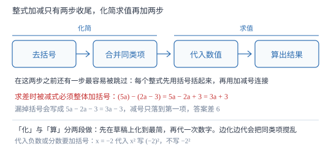

整式的加减与化简求值
整式加减只有两步：去括号、合并同类项。求两式的差时，减号后面那个式子必须先加括号——这是本章最贵的一个括号。
| 所属主题 | 整式的加减 |
|---|---|
| 所属模块 | 代数 |
| 课标学段 | 第四学段（7~9 年级） |
| 前置知识 | 去括号法则 |
| 核心素养 | 运算能力推理能力模型观念 |
教材定位
人民教育出版社《人教版（2024版）义务教育教科书·数学》
七年级上册第4章 整式的加减4.2 整式的加法与减法
对应七上 4.2 第 3 课时（整式的加减）。教材以「求两式的和与差」归纳运算法则；本篇把「求差必须加括号」与「与取值无关则系数为零」都给成证明，并把化简求值拆成可核对的四步。
说明
几个整式相加减，如果有括号就先去括号，然后再合并同类项。整式的加减在实质上是合并同类项：加减不产生任何新类型的项，只改变各项的系数，字母部分始终是原来那些。
求两个整式的和与差，要先列式再加括号。设 A=3a^2-2a+1、B=a^2+5a-3，则 A-B=(3a^2-2a+1)-(a^2+5a-3)。减号作用于整个 B，所以 B 的每一项都要变号，去括号得 3a^2-2a+1-a^2-5a+3=2a^2-7a+4。
化简求值走三步：一化（去括号、合并同类项）、二代（代入数值）、三算（算出结果）。先化简再代入，通常比直接把数代进去省力得多，也不容易在多个数字之间算错符号——化简是把「多次乘法」换成「一次乘法」的算法优化。
使用场景
中考与期末的固定题型就是「先化简，再求值」：给一个带括号的式子加一个字母的值，要求写出化简过程再代入。评分点通常分成「化简正确」与「代入正确」两段，化简错则后面全扣，所以过程必须写清不能跳步。
「与 x 的取值无关」这一类题也落在这一篇：把含 x 的项合并后令其系数为 0，求出待定字母的值。题目常以「无论 x 取何值，结果都不变」的形式出现，考的是对「恒等」的理解。
注意点
求差时被减式必须整体加括号：5a-(2a-3)=5a-2a+3=3a+3。写成 5a-2a-3 就等于只减了 B 的第一项，还多减了常数项。
结果要化简到底：不能残留同类项，不能残留括号，系数是带分数的要化成假分数（如 11/2a 写成 3a/2）。
结果一般按某一字母降幂排列：3a^2-7a+4 按 a 的降幂写，比 -7a+3a^2+4 更规范，也便于核对最高次项有没有算漏。
证明

图 1：先把式子收拾干净再代数字。化简与求值分两段做，比边化边代少一半符号风险
证明
结论 1整式加减的实质是合并同类项，加减不会产生新类型的项。
两个整式相加减时，去括号后每一项仍是单项式，其字母部分来自原来的项——可能因为乘 -1 而变号，但字母与指数不动。加减只在同类项内部把系数相加，字母部分原封不动。所以结果的每一项都能在原式中找到字母部分相同的来源，不会凭空出现新的字母组合。这就是「实质是合并同类项」的确切含义：整式加减既不需要新的运算法则，也不需要新的运算对象。
关键一步依据是去括号只改符号不改字母部分、合并只改系数不改字母部分；两步都不制造新的字母组合。
结论 2求两个多项式的差，被减式必须整体加括号，否则减号只作用于第一项。
减法法则是「减去一个数等于加上它的相反数」，而一个多项式是一个整体。A-B 中 B=2a-3，则 -B=-(2a-3)=-2a+3，所以 A-B=5a-2a+3=3a+3。若不加括号写成 5a-2a-3，等于只减了 B 的第一项 2a、同时还多减了 3，得 3a-3。取 a=4 检验：A-B=20-(8-3)=15；正确写法 3× 4+3=15 ✓，错误写法 3× 4-3=9 ✗。两组对照说明括号标出的正是「整体」这个身份。
关键一步依据是减号作用于整个多项式而非首项；括号的唯一作用就是把「整体」标出来，漏了它就改变了减法的对象。
结论 3若化简结果与 x 的取值无关，则含 x 项的系数必为 0。
设化简结果为 kx+c，其中 k、c 都不含 x。「与 x 无关」意味着对任意 x 取值，结果都相同。取 x=0 得 c；取 x=1 得 k+c。两者必须相等，即 k+c=c，解得 k=0。反过来，若 k≠q 0，取 x=0 与 x=1 会得到两个不同的值（相差 k），与「无关」矛盾。所以「无关」与「系数为零」是同一件事的两种说法，令系数为 0 就能解出待定字母。
关键一步依据是「对任意 x 都相等」这一条件，可以用两个不同的 x 值转化为方程；比较系数是最快的实现方式。
动手实验
设 A=2x^2+ax-3、B=2x^2-3x+1，先化简 A-B=(2x^2+ax-3)-(2x^2-3x+1)=(a+3)x-4。令 a=-3，式子变成 -4。再取 x=0、1、5、100 分别代入原式逐项计算：四组结果的差都是 -4，与 x 完全无关。若取 a=0，则 A-B=3x-4，x=0 得 -4、x=1 得 -1，立刻随 x 变化——这就是「系数不为零则与取值有关」的实测证据。
解题思路
整式加减按四步。第一步列式：把每个整式用括号括起来，再用加减号连接——这一步最容易被跳过，也是求差题的唯一失分点；第二步去括号：按符号规则逐项处理，系数乘遍每一项；第三步找同类项并合并：按字母与指数分组，只加系数；第四步整理结果：按降幂排列，检查有无残留括号与同类项。
化简求值把「化」与「算」彻底分开。先在草稿上把式子化到最简，再把数值代进去算一次，不要在化简途中随手代数字——那样同类项会被数字搅乱，也丢掉了「先化简省力」的好处。代入负数或分数时加括号，如 x=-2 代入 x^2 要写 (-2)^2。
「与取值无关」型按三步：先化简成 kx+c 的形式，再令含该字母的系数为 0 列方程，最后解出字母并回代验证（取两个不同的 x 值看结果是否相同）。回代这一步只要十几秒，却能挡住绝大多数计算失误。
按场景的例题
例 1（场景：图形设计） 两个长方形周长之差
长方形 A 长 (2a+3) 米、宽 a 米；长方形 B 长 (a+1) 米、宽 (a-1) 米。A 的周长比 B 多多少米？a=5 时多多少？
解：A 的周长 =2≤ft[(2a+3)+a]=2(3a+3)=6a+6；B 的周长 =2≤ft[(a+1)+(a-1)]=2(2a)=4a。差 =(6a+6)-4a=2a+6。a=5 时 2× 5+6=16 米。验算：A 周长 2×(13+5)=36，B 周长 2×(6+4)=20，差 16 ✓。这里两个周长都是整式，求差必须整体加括号。
答：2a+6 米；a=5 时多 16 米。
例 2（场景：金融与增长） 上下半年利润合计
某厂上半年利润 (5a^2-3a+2) 万元，下半年利润 (3a^2+4a-5) 万元。全年利润是多少？a=2 时是多少万元？
解：全年 =(5a^2-3a+2)+(3a^2+4a-5)=5a^2+3a^2-3a+4a+2-5=8a^2+a-3。a=2 时 8× 4+2-3=31 万元。验算：上半年 20-6+2=16，下半年 12+8-5=15，合计 31 ✓。这里是求和，括号可以直接去掉，各项符号一律不变——与求差的处理刚好相反。
答：8a^2+a-3 万元；a=2 时为 31 万元。
例 3（场景：行程与速度） 两车速度差
甲车 3 小时行驶 (6x+9) 千米，乙车 3 小时行驶 (3x-6) 千米。甲车比乙车每小时快多少千米？
解：速度差 =≤ft[(6x+9)-(3x-6)]÷ 3=(6x+9-3x+6)÷ 3=(3x+15)÷ 3=x+5。注意 -(3x-6) 去括号后是 -3x+6，第二项变了号。x=3 时甲速 27÷ 3=9、乙速 3÷ 3=1，差 8，与 3+5=8 一致。若漏掉括号写成 6x+9-3x-6，会得 3x+3，除以 3 后是 x+1，代入 x=3 得 4，与实际差 8 差了整整一倍。
答：(x+5) 千米/小时。
例 4（场景：竞技与游戏） 与取值无关
已知 A=2x^2+ax-3，B=2x^2-3x+1。若 A-B 的值与 x 的取值无关，求 a 的值。
解：A-B=(2x^2+ax-3)-(2x^2-3x+1)=2x^2+ax-3-2x^2+3x-1=(a+3)x-4。要与 x 无关，含 x 的项必须消失，即 a+3=0，得 a=-3。验证：a=-3 时 A-B=-4，取 x=0、1、100 代入都得 -4，与 x 无关。若解得 a=3，代回得 6x-4，随 x 变化，与题目条件直接冲突。
答：a=-3。
常用推论
两个整式的和与差的次数不会超过两者中较高的次数；若最高次项恰好抵消，次数会降低，如 (x^2+x)-(x^2+1)=x-1，从二次降为一次。
「与某字母无关」的题一律化成「该字母的系数为 0」；若含该字母的项完全抵消，系数解出来是确定值而不是范围。
化简能显著减少代入的计算量：三项式先化简再一次代入，通常比逐项代入少一半乘法，也少一半符号风险。
易错点
错求 A-B 时写成 2x^2+ax-3-2x^2-3x+1，只把 B 的第一项变号。
为什么错减号作用于整个 B，B 的每一项都要变号：-3x 变 +3x、+1 变 -1。
正确(2x^2+ax-3)-(2x^2-3x+1)=2x^2+ax-3-2x^2+3x-1=(a+3)x-4。
错化简 3(x-2)-2(x+1) 时写成 3x-6-2x+2。
为什么错-2 乘 +1 得 -2，不是 +2；只有括号内本身是负数时负负才得正。
正确3x-6-2x-2=x-8。
错结果写成 -7a+3a^2+4 就当作完事。
为什么错既没按降幂排列，也没检查是否还残留可合并的项，形式上不算最简。
正确整理成 3a^2-7a+4，并确认无同类项、无括号。
直观理解
整式加减像整理账单：括号是「一叠还没拆开的票据」，去括号就是把票据一张张摊开——负号是退款，方向必须反过来记；合并同类项是把同一种开销汇总。先把账理清再报总数，永远比边翻边加更准。